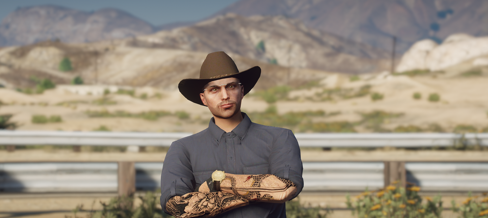

Majiteľ
Aiden Pearce
Nie som ten, Äo stojà pri panvici — som ten, Äo držà túto krÄmu pokope a nedovolÃm, aby z kuchyne odišlo nieÄo, za Äo by som nedal svoje meno. Milujem tradÃciu a poctivosť. Chcem, aby sa každý hosť cÃtil tak dobre, že zabudne na Äas — ale nikdy nie na chuť, ktorú tu zažije.